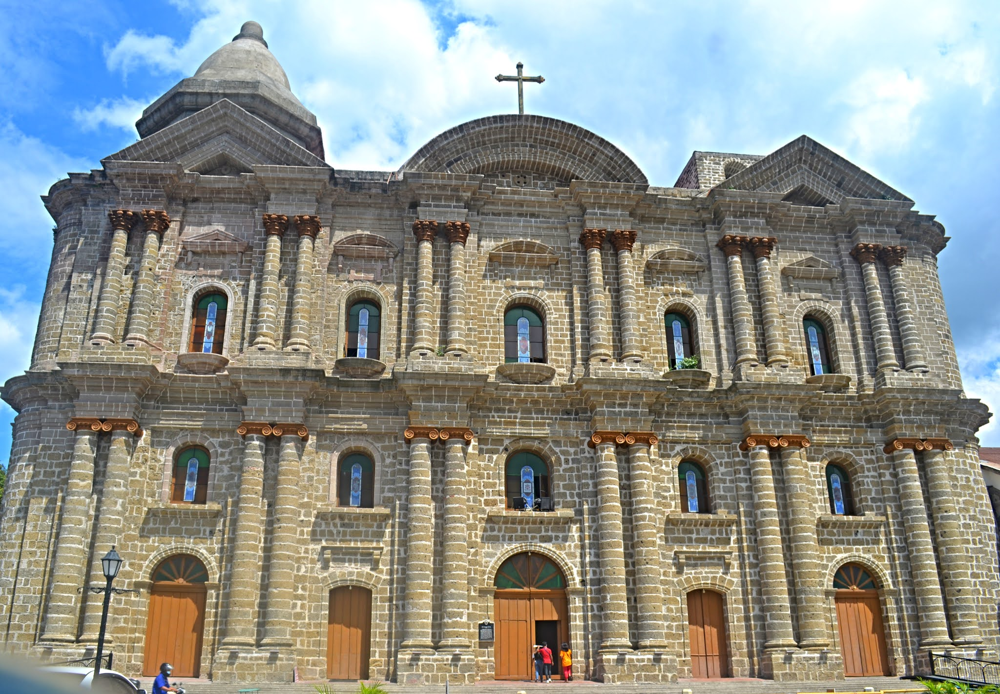

Taal, officially the Municipality of Taal, is a 3rd class municipality in the province of Batangas, Philippines. According to the 2020 census, it has a population of 61,460 people.

Taal Church
TAAL BASILICA, BATANGAS: Asia’s Largest Catholic Church
A giant scaffolding rose right before the basilica’s altar at the point where the nave and the transept meet. Apparently, the church’s interiors were undergoing a minor renovation. The top of the bamboo scaffold reached to the ceiling of the dome which was being painted. I could not imagine how difficult it was for the painters. After all, they were inside the biggest Catholic church in the Philippines and in the whole of Asia.
Taal Heritage Town
Founded in 1572, Taal was once a prosperous and influential town. Traders from all over the Philippines and abroad would travel here to do business with the locals.
Taal Heritage Town
Though wars and calamities have threatened to destroy Taal over the centuries, the people always found a way to rise up and rebuild their beloved hometown
Taal Heritage Town
Primarily characterized by grand architectural structures with Filipino Hispanic lines, aesthetically-preserved museums and world-class places of worship, Taal is culturally rich with unique hand-woven textiles, metal craft, artifacts, and a variety of food